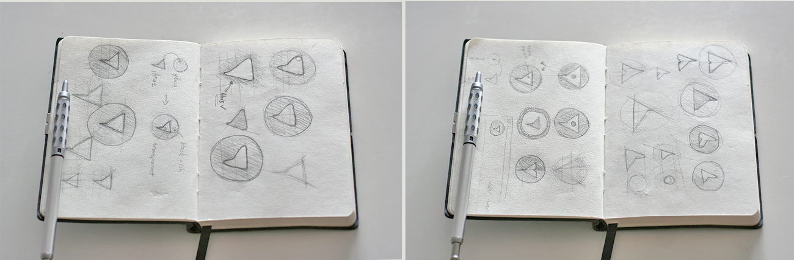

Big Data Bollywood Explorer
Skipping the doctype can cause issues with malformed tables, inputs, and more.
Box model math
Elements that have a set width become wider when they have padding and/or border-width. To avoid these problems, make use of the now common box-sizing: border-box; reset.
Rem units and Mobile Safari
While Mobile Safari supports the use of rems in all property values, it seems to shit the bed when rems are used in dimensional media queries and infinitely flashes the page's text in different sizes.
For now, use ems in place of rems.
